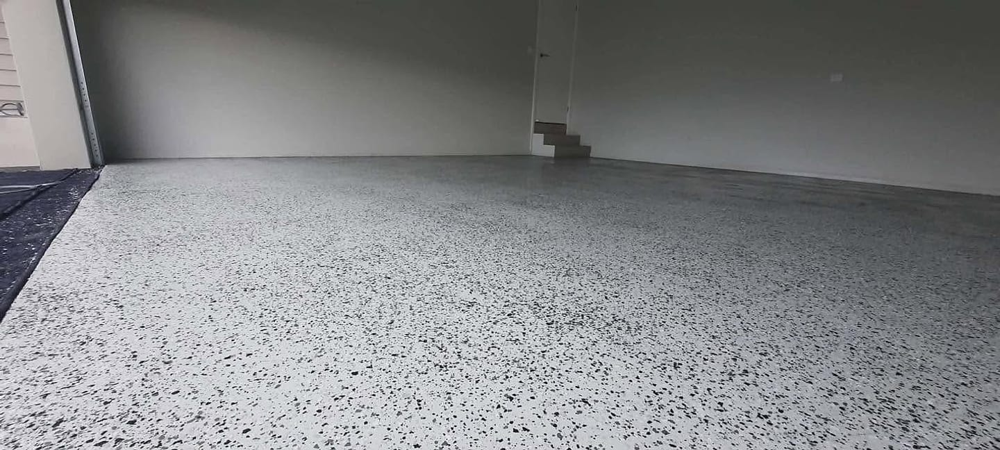

“Jarrod and his team did a fantastic job at my house very satisfied with the results and how professional he is , would highly recommend this company”
Garage floors · Newcastle & the Hunter
Garage floor coatings, ground back and done once.
The most common job we take on, and the one where preparation matters most. A garage slab gets hot tyres, dropped tools, oil and water — a coating only survives that if it is bonded to properly prepared concrete.

Flake epoxy garage floor
The honest version
Why garage floors fail.
Almost always the bond. A coating rolled onto a sealed, dusty or contaminated slab has nothing to hold to, and the first hot summer tyre lifts it.
Grinding is the fix, and it is the step that disappears from a sharpened quote — because nobody can see it once the floor is finished. That is exactly why we photograph it.
Hot-tyre pickup
Warm tyres soften a weakly bonded coating and pull it off in patches where you park.
Lifting at the door
The threshold takes sun, rain and traffic. It is the first place a shortcut shows.
Dusting
A weak surface layer left in place keeps shedding fine grit no matter how often you sweep.
Peeling after a DIY kit
Kits go straight onto the slab as it is. If yours has failed, the old coating comes off as part of our preparation.
Our method
The Floor Candy Surface Preparation System.
Ten steps, in order, on every floor. What changes between jobs is the system specified at step 2 — that depends on your concrete, not on a package.
Inspect the concrete
We look at the slab and at how the space is actually used — parked on, walked on, washed down, or all three.
Assess the surface
Cracks, damage, contamination and potential moisture concerns. This is where the system gets specified.
Diamond-grind mechanically
Weak surface material comes off and the slab is profiled so the coating has something to key into.
Extract and clean
Industrial dust extraction through the grind, then a thorough clean of the prepared surface.
Repair where appropriate
Cracks, chips and damaged areas made good. Existing or moving cracks can be repaired — they cannot be permanently eliminated, and we will say so on site.
Prime or base-coat
The primer or base system specified for your concrete and its intended use.
Apply the finish
Your selected finish, including a full flake broadcast where that is the system chosen.
Refine before topcoat
Excess flake removed and the surface refined, then the protective topcoat goes on.
Final inspection and walkthrough
We walk the finished floor with you before the balance is paid.
Handover guidance
System-specific advice on curing, when vehicles can go back on, cleaning and maintenance.
Garage questions
What people ask before booking.
How much does a garage floor cost?
We do not publish prices, because the honest answer depends on the slab — its size, its condition, whether there is an existing coating to remove, access, and the finish you choose. You get a fixed itemised price in writing after we have seen it.
Do I need to empty the garage?
Yes — we need clear access to the whole slab to grind it properly. We will talk through what that means for your space at the assessment.
My existing coating is peeling. Can you go over it?
Not over it. A failing coating has to come off as part of the preparation, or the new floor inherits the same problem. Removal is assessed and priced as part of the job.
Is a flake finish slippery?
A full flake broadcast has noticeably more texture underfoot than a smooth gloss. Tell us how the space gets used — wet feet, dogs, a workshop — and we will talk through the trade-off honestly on site.
How long before I can park on it?
That depends on the system specified for your slab, so we give you the actual figures for your floor at handover rather than a blanket promise here.
What customers say
5.0
from 3 Google reviews
We are a small operation and these are all of them, in full, exactly as they were written.
“We had an epoxy floor installed in our shed conversion and it’s completely transformed the space. It looks great and is super easy to maintain. Jarrod was super helpful and efficient, the finish is high quality. Really happy with the result and would definitely recommend.”
“I recently had the pleasure of working with Jarred from Floor Candy and I couldn’t be happier with the results. His expertise in natural stone polishing is outstanding—he restored our stone surfaces to a beautiful, high-quality finish that…”
Shown as Google truncates it.
Rating and review count verified on the Floor Candy Google Business Profile, 10 August 2026.
Newcastle & the Hunter Region
Start with the slab.
Book a free on-site assessment and find out what your concrete actually needs — before anyone quotes you a number.